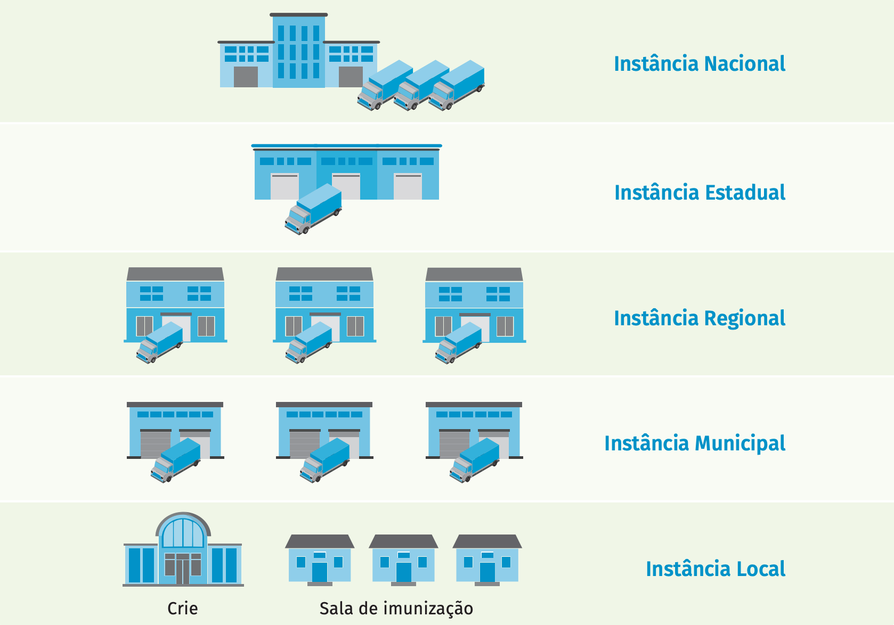

Rede de Frio
Para assegurar a eficácia e qualidade dos imunobiológicos, o PNI conta com uma Rede Nacional constituída por uma estrutura física (Rede de Frio) que viabiliza processo logístico, a cadeia de frio.
A estrutura da Rede de Frio está organizada em instâncias (nacional, estadual, regional, municipal e local), nas esferas federal, estadual e municipal, com fluxos articulados de armazenamento e distribuição.
As Centrais de Rede de Frio (CRF) realizam exclusivamente logística, têm como atribuição o recebimento, armazenagem, distribuição e transporte dos imunobiológicos e insumos utilizados na vacinação. As salas de imunização e os Centros de Referência para Imunobiológicos Especiais (CRIE), organizados na instância local, realizam a vacinação do Sistema Único de Saúde. Os CRIE responsabilizam-se, adicionalmente, por “garantir os mecanismos necessários para investigação, acompanhamento e elucidação dos casos de eventos adversos graves e/ou inusitados associados temporalmente às aplicações de imunobiológicos.” (Portaria n°48/2004).
Instâncias da Rede de Frio
Fonte: Manual da Rede de Frio
Coordenação-Geral do Programa Nacional de Imunizações (CGPNI) - unidade gestora e estrutura técnico-administrativa da Secretaria de Vigilância em Saúde (SVS) do Ministério da Saúde (MS) é responsável pelas atividades de interlocução com as outras instâncias; pelas ações relativas ao funcionamento da Rede de Frio e sua normatização; pelo planejamento das aquisições; pela distribuição e acompanhamento sistemático da qualidade dos imunobiológicos e da avaliação da situação epidemiológica das doenças; e, pela atualização dos Calendários de Vacinação Nacional, incluindo campanhas nacionais de vacinação.
Centro de Armazenagem e Distribuição (COADI) - sob a responsabilidade administrativa da Secretaria-Executiva do Ministério da Saúde. É o complexo logístico de armazenamento e distribuição, representa o primeiro nível da cadeia de frio, possui câmara fria com temperaturas controladas de +2oC a +8oC; e de -20oC a -15oC, além de área climatizada com temperatura controlada para atividades de preparo, recebimento e distribuição. Essa estrutura dispõe de sistema de automação moderno e eficiente para o controle qualificado e a manutenção dos equipamentos de refrigeração, alarmes e geração externa de energia. Tais recursos garantem, atualmente, a distribuição.
Instituto Nacional de Controle de Qualidade em Saúde (INCQS) - atua em áreas de ensino, pesquisa e tecnologia de laboratório relativas ao controle da qualidade de insumos, produtos, ambientes e serviços sujeitos à ação da vigilância sanitária, para posterior distribuição às instâncias estaduais incluindo todos os imunobiológicos adquiridos pela CGPNI e armazenados, inicialmente na COADI.
Organizada em 27 centrais estaduais de armazenamento e distribuição de imunobiológicos.
Geralmente, localizadas nas capitais das unidades federadas do país estão sob a responsabilidade técnico-administrativa das coordenações estaduais de imunizações das Secretarias Estaduais de Saúde (SES).
Com base na demanda específica do Estado, na capacidade de armazenamento da Central Estadual de Rede de Frio (Cerf) e de distribuição, na cadeia de frio, as centrais planejam a necessidade de imunobiológicos, de forma a atender às atividades de vacinação dos Calendários de Vacinação Nacional e da situação epidemiológica (Campanhas de Vacinação).
Entre outras ações e atividades as CRFs realizam o armazenamento e distribuição, com câmaras frias positivas (+2oC a +8oC) e negativas (-25oC a -15oC), a depender da demanda; sala de distribuição; área de recebimento e inspeção de imunobiológicos; e, almoxarifado. Além de sistema de segurança instalado com grupo gerador, para suprir situações de falha/falta de energia elétrica.
Nas unidades federadas que estão organizadas com instância regional existem Centrais Regionais de Rede de Frio (CRRFs), subordinadas, via de regra, às SES. Ocupam posição estratégica na distribuição de vacinas e assumem atividades compatíveis com as centrais estaduais em relação aos municípios de sua abrangência.
Dispõem de:
- de área para armazenamento dos imunobiológicos geridos no âmbito de sua abrangência;
- de almoxarifado para outros insumos;
- de área destinada ao recebimento, à preparação e à distribuição dos imunobiológicos, incluindo área para grupo gerador, área de acesso aos veículos de carga.
Nesse âmbito temos a Central Municipal de Rede de Frio (CMRF), incluída na estrutura organizacional da Secretaria Municipal de Saúde (SMS) que têm as seguintes atribuições: estabelecer o planejamento do armazenamento de imunobiológicos recebidos da Instância Estadual/Regional para utilização na sala de imunização.
As CMRF devem prever: espaço para o armazenamento de imunobiológicos; almoxarifado para outros insumos (seringas, agulhas, caixas térmicas, bobinas reutilizáveis, entre outros); área de acesso aos veículos de carga/descarga; área destinada ao recebimento, à preparação e à distribuição dos imunobiológicos; e, área com grupo gerador. A depender do quantitativo populacional/situação epidemiológica e consequente volume de imunobiológicos manuseados, a CMFR poderá prever câmaras frias.
Ocupa posição estratégica na Rede de Frio, uma vez que concretiza a política nacional de imunizações, por meio da administração de imunobiológicos de forma segura, na atenção básica ou assistência, estando em contato direto com o usuário final da cadeia de frio e planeja e operacionaliza a vacinação extramuros, em especial nas campanhas vacinais.
Sala de imunização
A Sala de imunização (SI) representa a instância final da Rede de Frio, sendo responsável exclusivamente pelos procedimentos de vacinação de rotina, campanhas, bloqueios e intensificações. Consideradas suas atribuições, as salas localizam-se em unidades/ serviços da Rede de Atenção Básica de Saúde e, em menor proporção, na assistência. As SI que estão estruturadas em estabelecimentos de saúde de média e alta complexidade poderão realizar aplicação de vacinas do calendário vacinal na rotina e campanha. Para a realização de sua atividade, é fundamental o armazenamento dos imunobiológicos aplicáveis em suas rotinas em equipamentos de refrigeração apropriados e dentro de condições ideais.
O volume dos equipamentos deve prever o prazo ideal de até 30 dias de armazenamento dos imunobiológicos, considerando o quantitativo populacional de sua abrangência, as metas de cobertura, as estratégicas (rotina e cobertura) e a sua respectiva programação de abastecimento. As necessidades e frequência de execução de atividades extramuros e/ou situações emergenciais são aspectos a serem considerados para seleção e dimensionamento dos equipamentos e insumos.
Centro de Referência para Imunobiológicos Especiais (Crie)
Instituídos pela Portaria no 48, de 28 de julho de 2004, os CRIE estão administrativamente subordinados às instituições onde estão implantados e tecnicamente às SES ou às SMS. O funcionamento e a operacionalização destes centros devem prever facilidade de acesso à população, em especial aos portadores de imunodeficiência e de condições de morbidade ou exposições às situações de risco e, da mesma forma, garantir investigação, acompanhamento e elucidação dos casos de eventos adversos pós-vacinação e estão aptas à administração de todos os imunobiológicos distribuídos na Rede de Frio. Devem funcionar diariamente e em tempo integral, de preferência instalados em ambiente hospitalar, centros de onco-hematologia ou ambulatórios de especialidades, disponibilizando equipamentos em quantidades necessárias à manutenção dos produtos refrigerados, tanto para demanda da unidade quanto para utilização em situações específicas de atendimento.
O processo de vacinação, do calendário de rotina e de Campanha de vacinação, tais como contra a Covid-19, efetiva-se a partir da organização e estruturação da Rede de frio, dentro dos princípios e normas estabelecidas para os procedimentos relativos à conservação, ao armazenamento e transporte.
Destacamos algumas orientações da OMS, sobre o que NÃO deve ser feito em relação ao armazenamento e conservação de vacinas:
- Nunca coloque as vacinas em contato ou próximo à placa do congelador, para evitar o congelamento da vacina.
- Não guarde as vacinas reconstituídas por mais de 6 horas após a abertura ou ao final do procedimento de vacinação.
- Não armazene amostras de laboratório, bebidas, produtos alimentícios ou produtos de saúde vencidos com vacinas.
- Não guarde vacinas vencidas na geladeira.